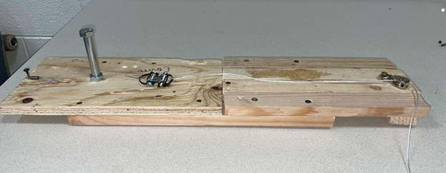
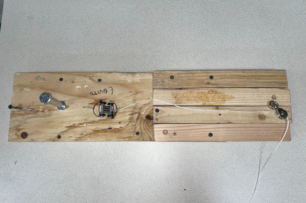
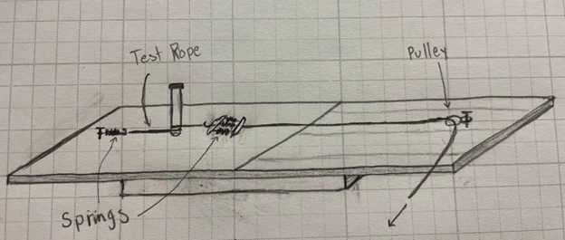
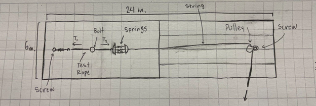

Determining the Static Friction Coefficient Between a Rope and a Carabiner or Cylindrical Object
Description
BYU ME EN 101 Design Project. Team of 5 individuals.
In this project a simple device for a climbing equipment company was created. The purpose of this constructed device is to measure the static friction coefficient present between a rope and a carabiner. The device can measure variable-size diameter rope approximately 12 inches long with minimal human intervention. The capability is accurate measurements for coefficients of friction between 0.03 and 0.4 around a ½ inch diameter steel bolt.
Timeline
Duration: April 2024
Total time: 15 hours
Result
The design approach is to determine the ratio of tensions of each side of the rope at the moment the rope slips on the cylinder, from which, the static coefficient can be computed. Our method consists of using fixed springs attached to both sides of the rope which is wrapped around the cylinder. The displacement of these springs correlates to the amount of force produced by them, which, due to simple force analysis at static equilibrium, corresponds with the amount of tension in the rope.
The implemented design assumes that for every measurement one spring is stretched the same amount, therefore a constant value of tension force on one side of the rope is maintained. Hence, only one tension force needs to be observed by the user, acquired by measuring the displacement of the springs hooked to the opposite side of the rope at the moment it slips about the steel bolt.
In effort to increase ease of use and simplicity of the device, this displacement will be measured using a meter already displaying the static coefficient of friction, previously calculated according to the equivalent length of spring displacement.

The friction coefficient measurement device

Top view

General concept and drawing of the designed instrument

More detailed concept and drawing of the designed instrument